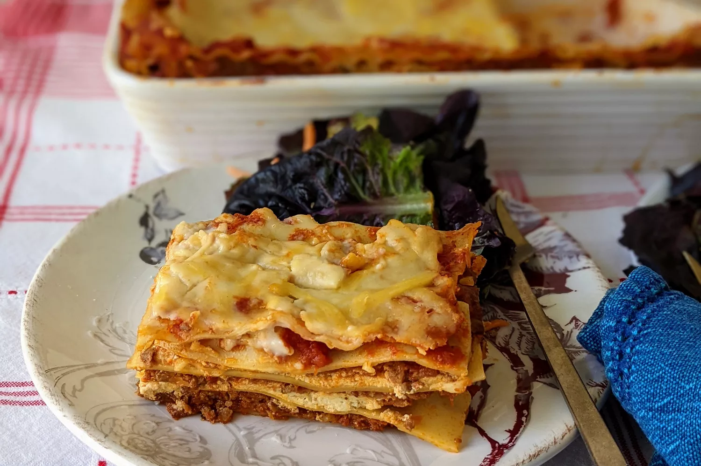

Lasagna Recipe
Lasagna Recipe

Lasagna Image
Description
This is my mom's special homemade lasagna recipe with a meaty, made-from-scratch tomato sauce and a deliciously cheesy filling. A more traditional homemade lasagna filling would be made with ricotta but my mom's recipe calls for a blend of small-curd cottage cheese and Parmesan. I have found none better anywhere. Serve with a leafy green salad and crusty garlic bread.
Homemade lasagna isn't as hard to make as it seems. Don't be intimidated by all the layers of delicious Italian flavor — try this homemade lasagna recipe today!
Ingredients
- Meat
- Onion
- Canned Tomatoes
- Fresh Herbs
- Sugar
- Spices and Seasonings
- Noodles
- Cheese
- Eggs
Steps
- Cook the meat: Cook the ground meat in a skillet until browned and crumbly. Add the onion and continue cooking until it's translucent. Stir in the canned tomato products, half of the parsley, garlic, basil, 1.5 teaspoons of salt, oregano, and sugar.
- Cook the noodles: Boil the lasagna noodles in lightly salted water until they're al dente.
- Make the cheese layer: Mix cottage cheese, Parmesan cheese, eggs, the remaining parsley, the remaining salt, and pepper in a bowl.
- Assemble the lasagna: Layer the ingredients according to the recipe (starting with sauce and ending with mozzarella) until the lasagna is assembled.
- Bake the lasagna: Cover with foil and bake in the preheated oven for about half an hour. Remove the foil and continue baking until the top is golden brown.